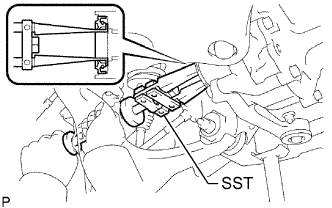
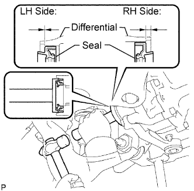

FRONT DIFFERENTIAL SIDE GEAR SHAFT OIL SEAL > REPLACEMENT |
| 1. DRAIN DIFFERENTIAL OIL |
Stop the vehicle on a level place.
 |
for Front Differential:
Remove the engine under cover.
Using a 10 mm hexagon wrench, remove the filler plug and gasket.
Using a 10 mm hexagon wrench, remove the drain plug and gasket, and drain the oil.
Using a 10 mm hexagon wrench, install a new gasket and the drain plug.
for Rear Differential:
Remove the filler plug and gasket.
Remove the drain plug and gasket, and drain the oil.
Install a new gasket and the drain plug.
| 2. REMOVE FRONT DRIVE SHAFT ASSEMBLY LH |
Remove the front drive shaft (Click here).
| 3. REMOVE DIFFERENTIAL SIDE GEAR SHAFT OIL SEAL |
 |
Using SST, tap out the 2 oil seals.
| 4. INSTALL DIFFERENTIAL SIDE GEAR SHAFT OIL SEAL |
 |
Apply MP grease to 2 new oil seals.
Using SST and a hammer, tap in the 2 oil seals.
| Side | Specified Condition |
| LH | -0.45 to 0.45 mm (-0.0177 to 0.0177 in.) |
| RH | 4.8 to 5.8 mm (0.189 to 0.228 in.) |
| 5. INSTALL FRONT DRIVE SHAFT ASSEMBLY LH |
Install the front drive shaft (Click here).
| 6. ADD DIFFERENTIAL OIL |
 |
Add differential oil so that the oil level is between 0 to 5 mm (0 to 0.197 in.) from the bottom lip of the differential filler plug hole.
| Item | Oil Type and Viscosity |
| w/o LSD | Toyota Genuine Differential gear oil LT 75W-85 GL-5 or equivalent |
| w/ LSD | Toyota Genuine Differential gear oil LX 75W-85 GL-5 or equivalent |
| Item | Specified Condition |
| Standard | 4.15 to 4.25 liters (4.39 to 4.49 US qts., 3.66 to 3.74 Imp. qts.) |
| w/ LSD | 4.10 to 4.20 liters (4.34 to 4.43 US qts., 3.60 to 3.69 Imp. qts.) |
| w/ Differential lock |
for Front Differential:
Using a 10 mm hexagon wrench, install a new gasket and the filler plug.
Install the engine under cover.
for Rear Differential:
Install a new gasket and the filler plug.